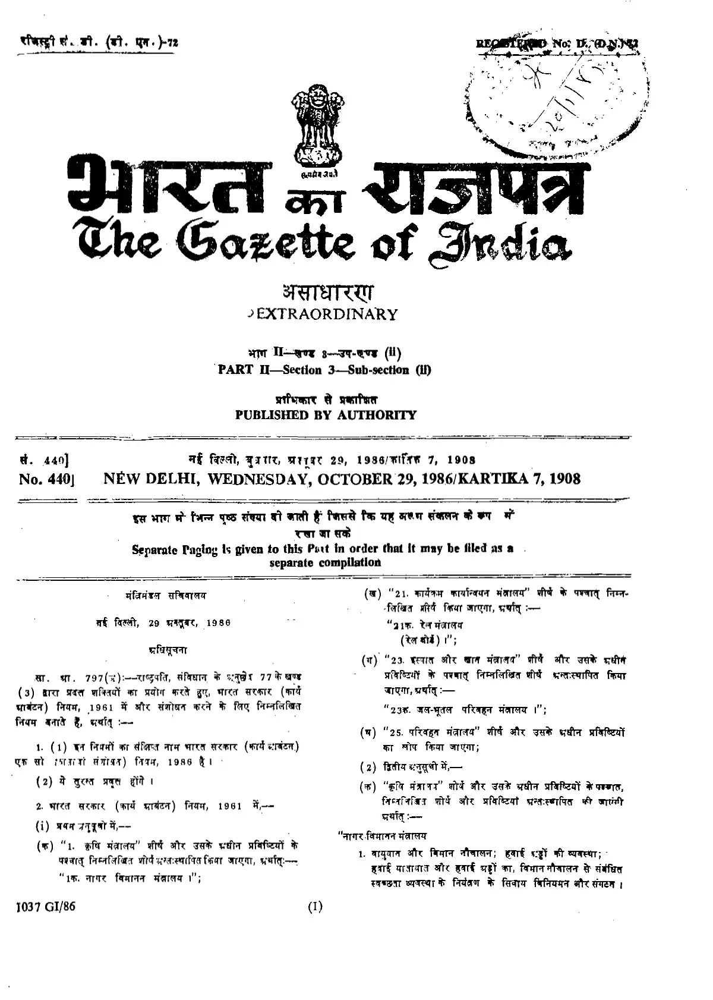
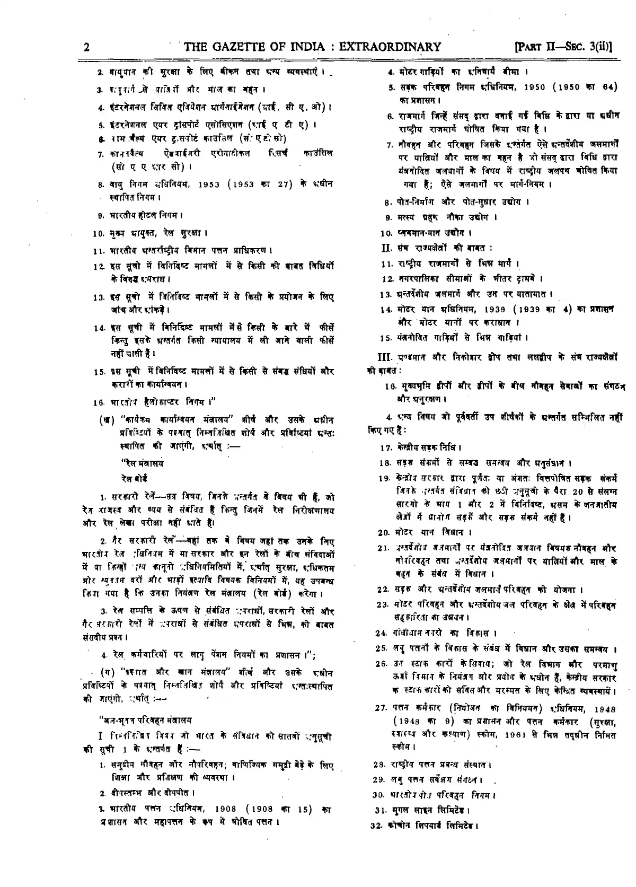
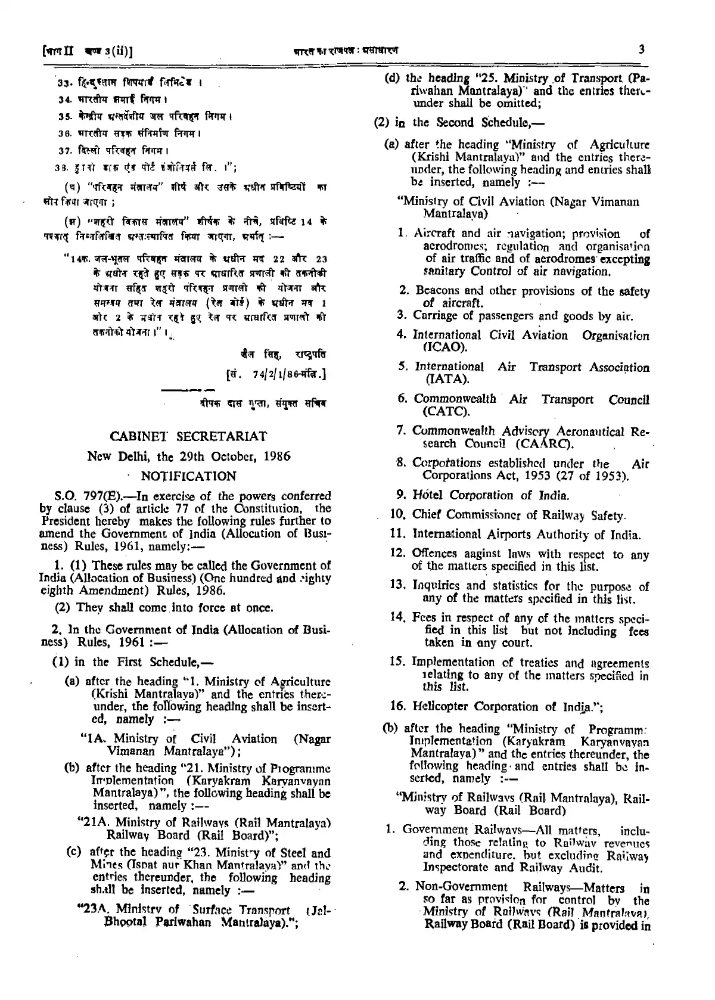
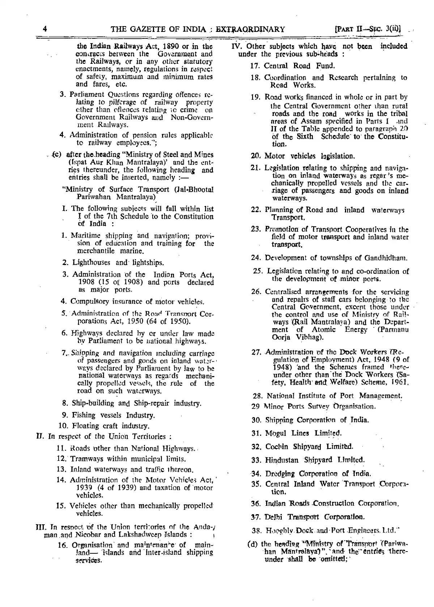
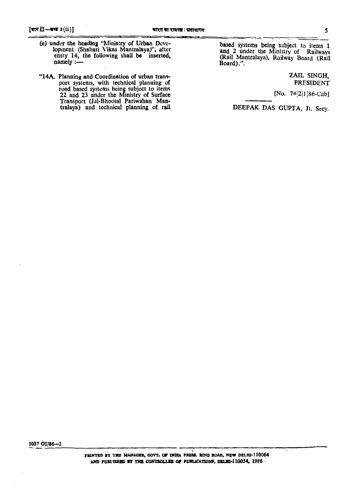

Amendment #188 (S.O. 797(E), 1986)
9 changes: 4 to the First Schedule, 5 to the Second Schedule. 9 applied
What it did to the ministries
- splitTransport divides into Surface Transport and Civil Aviation. change 1, 2, 3, 4, 5, 6 · histories: Transport, Surface Transport, Civil Aviation and Tourism, Railways
The order, page by page
Page 1 of 6

Page 2 of 6

Page 3 of 6

123456after Schedule 1 › Ministry of Agriculture
- 1A. Ministry of Civil Aviation
applied at schedule 1 › ministry 1A in the Rules after #188
after Schedule 1 › Ministry of Programme Implementation
- 21A. Ministry of Railways Railway Board (Rail Board)
applied at schedule 1 › ministry 21A in the Rules after #188
after Schedule 1 › Ministry of Steel and Mines
- 23A. Ministry of Surface Transport
applied at schedule 1 › ministry 23A in the Rules after #188
Schedule 1 › Ministry of Transport
applied at schedule 1 › ministry 24 in the Rules after #188
after Schedule 2 › Ministry of Agriculture
- Ministry of Civil Aviation
- 1. Aircraft and air navigation; provision of acrodromes; regulation and organisation. of air traffic and of aerodromes excepting sanitary Control of air navigation.
- 2. Beacons and other provisions of the safety of aircraft.
- 3. Carriage of passengers and goods by air.
- 4. International Civil Aviation Organisation (ICAO).
- 5. International Air Transport Association (IATA).
and 11 more
- 6. Commonwealth Air Transport Council (CATC).
- 7. Commonwealth Advisory Aeronautical Research Council (CAARC).
- 8. Corporations established under the Air Corporations Act, 1953 (27 of 1953).
- 9. Hótel Corporation of India.
- 10. Chief Commissioner of Railway Safety.
- 11. International Airports Authority of India.
- 12. Offences aaginst laws with respect to any of the matters specified in this list.
- 13. Inquiries and statistics for the purpose of any of the matters specified in this list.
- 14. Fees in respect of any of the matters specified in this list but not including fees taken in any court.
- 15. Implementation of treaties and agreements relating to any of the matters specified in this list.
- 16. Helicopter Corporation of India.
applied at schedule 2 › ministry Ministry of Civil Aviation in the Rules after #188
after Schedule 2 › Ministry of Programm: Implementation
- Ministry of Railways (Rail Mantralaya), Railway Board (Rail Board)
- 1. Government Railways-All matters, including those relating to Railway revenues and expenditure, but excluding Railway Inspectorate and Railway Audit.
- 2. Non-Government Railways-Matters in so far as provision for control by the Ministry of Railways (Rail Mantralava) Railway Board (Rail Board) is provided in the Indian Railways Act, 1890 or in the contracts between the Government and the Railways, or in any other statutory enactments, namely,…
- 3. Parliament Questions regarding offences relating to pilferage of railway property ether than oflences relating to crime on Government Railways and Non-Government Railways.
- 4. Administration of pension rules applicable to railway employees.
applied at schedule 2 › ministry Ministry of Railways (Rail Mantralaya), Railway Board (Rail Board) in the Rules after #188
read page break, states inferred loose
Page 4 of 6

78after Schedule 2 › Ministry of Steel and Mines
- Ministry of Surface Transport
- I. The following subjects will fall within list I of the 7th Schedule to the Constitution of India :
- 1. Maritime shipping and navigation; provision of education and training for the merchantile marine.
- 2. Lighthouses and lightships.
- 3. Administration of the Indian Ports Act. 1908 (15 of 1908) and ports declared as major ports.
- 4. Compulsory insurance of notor vehicles.
and 37 more
- 5. Administration of the Road Transport Corporations Act, 1950 (64 of 1950).
- 6. Highways declared by or under law made by Parliament to be national highways.
- 7. Shipping and navigation including carriage of passengers and goods on inland waterways declared by Parliament by law to be national waterways as regards mechanically propelled vessels, the rule of the road on such waterways.
- 8. Ship-building and Ship-repair industry.
- 9. Fishing vessels Industry.
- 10. Floating craft industry.
- IJ. In respect of the Union Territories:
- 11. Roads other than National Highways..
- 12. Tramways within municipal limits.
- 13. Inland waterways and traffic thereon.
- 14. Administration of the Motor Vehicles Act, 1 1939 (4 of 1939) and taxation of motor vehicles.
- 15. Vehicles other than mechanically propelled vehicles.
- III. In respect of the Union territories of the Anda-/ man and Nicobar and Lakshadweep Islands: ।
- 16. Organisation and maintenance of mainand islands and inter-island shipping services.
- IV. Other subjects which have not been included under the previous sub-heads :
- 17. Central Road Fund.
- 18. Coordination and Research pertaining to Road Works.
- 19. Road works financed in whole or in part by the Central Government other than rural roads and the road works in the tribal areas of Assam specified in Parts I and II of the Table appended to paragraph 20 of the Sixth Schedule to the Constitution.
- 20. Motor vehicles legislation.
- 21. Legislation relating to shipping and navigation on inland waterways as regar's mechanically propelled vessels and the carriage of passengers and goods on inland waterways.
- 22. Planning of Road and inland waterways Transport.
- 23. Promotion of Transport Cooperatives in the field of motor transport and inland water transport.
- 24. Development of townships of Gandhidham.
- 25. Legislation relating to and co-ordination of the development of minor ports.
- 26. Centralised arrangements for the servicing and repairs of staff cars belonging to the Central Government, except those under the control and use of Ministry of Railways (Rail Mantralaya) and the Department of Atomic Energy (Parmanu Oorja Vibhag).
- 27. Administration of the Dock Workers (Rcgulation of Employment) Act, 1948 (9 of 1948) and the Schemes framed thereunder other than the Dock Workers (Safety, Health and Welfare) Scheme, 1961.
- 28. National Institute of Port Management.
- 29. Minor Ports Survey Organisation.
- 30. Shipping Corporation of India.
- 31. Mogul Lines Limited.
- 32. Cochin Shipyard Limited.
- 33. Hindustan Shipyard Limited.
- 34. Dredging Corporation of India.
- 35. Central Inland Water Transport Corporation.
- 36. Indian Roads Construction Corporation.
- 37. Delhi Transport Corporation.
- 38. Hoogbly. Dock and Port Engineers. Ltd.
applied at schedule 2 › ministry Ministry of Surface Transport in the Rules after #188
Schedule 2 › Ministry of Transport
applied at schedule 2 › ministry in the Rules after #188
Page 5 of 6

9after Schedule 2 › Ministry of Urban Development › entry 14
- 14A. Planning and Coordination of urban transport systems, with technical planning of road based systems being subject to items 22 and 23 under the Ministry of Surface Transport (Jal-Bhootal Pariwahan Mantralaya) and technical planning of rail - i PRINTED BY THE MANAGER, GOVT. OF INDIA PRESS. RINO…
applied at schedule 2 › ministry MINISTRY OF URBAN DEVELOPMENT › entry 14A in the Rules after #188
read page break
Page 6 of 6
How this document was read
Edits to the reading
| Date | By | Edit | Before → after |
|---|---|---|---|
| 11 November 2026 | mukundesh | word corrected | |
| 21 November 2026 | claude | word corrected |
Changes placed by an inference rule
| Change | Rule | Status | What |
|---|---|---|---|
| 6 | loose | accepted | change 6: ministry Ministry of Programm: Implementation taken for ministry MINISTRY OF PROGRAMME IMPLEMENTA- TION, named loosely |
From the Government of India (Allocation of Business) Rules, 1961 and their amendments, as published by the Cabinet Secretariat (cabsec.gov.in), read by orgpedia. The readings of the older scanned gazettes have known gaps.